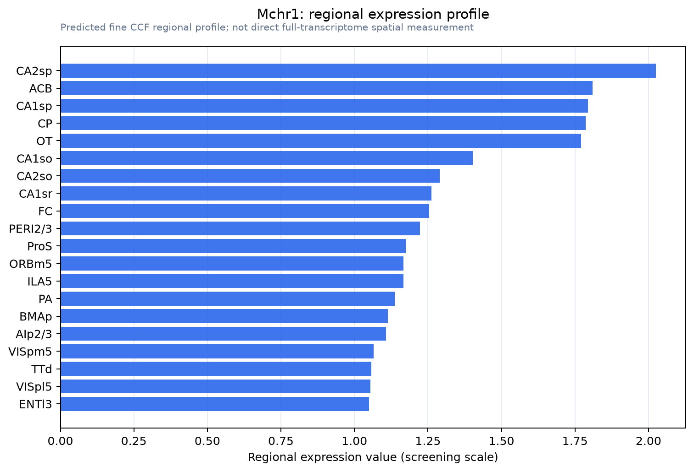

Mchr1
Melanin-concentrating hormone receptor 1 (MCH receptor 1) (MCH-R1) (MCHR-1) (G protein-coupled receptor 24) (MCH-1R) (MCH1R) (MCHR) (SLC-1) (Somatostatin receptor-like protein)
Spatial tier: REGION_BIASED · Class: GPCR · Top region: CA2sp (Field CA2, pyramidal layer) · Positive regions: 33/554
42.1Discovery Score
38.6Targetability Score
CEvidence grade C
What this means: Mchr1: fine CCF profile is region-biased toward CA2sp (top regions: CA2sp, ACB, CA1sp, CP, OT); this is a discovery lead, not direct proof.
Direct spatial evidence
MERFISH REGION LOCATOR

Regional expression figure

Predicted WMB × fine-CCF profile; not direct full-transcriptome spatial measurement.
Spatial profile
Evidence and specificity
- Evidence status
- PREDICTED_FINE
- Direct sources
- None; predicted localization only
- Exclusive threshold
- 12 positive regions out of 554
- Spatial specificity
- 0.284
- Top-region fraction
- 0.046
- Filter status
- PASS
Interpretation limits
- Cell-type-to-region projection is imputed expression, not direct spatial measurement.
- Adult reference atlases do not establish stability across age, sex, strain, state, or disease.
- Transcript abundance does not guarantee protein abundance or genetic-tool performance.